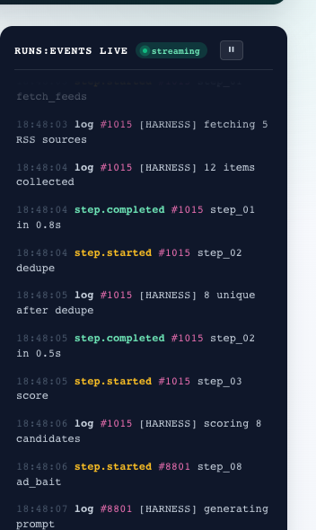

Half your buyers now start in an AI chatbot. Are you in the answer?
A fixed-scope audit that shows where your company appears — and disappears — when buyers ask ChatGPT and Perplexity about your category. Delivered as a plan you can execute, not a scoreboard.
In scope — four deliverables
- Citation baseline — where you appear, where competitors appear, what the answers cite
- Source map — which publications and communities feed the answers
- Content gap report — the questions AI can't answer about you
- 90-day execution plan — sequenced by citation impact
FIXED · TWO WEEKS · USD
The problem, in primary sources
The shortlist now happens before you know there's a deal.
Your buyers still buy from humans. But the list of humans they talk to is increasingly written by a machine. If you're not in the answer, you're not in the deal. You'll never know the deal existed.
Why nothing you've tried fixed it
Tools measure. Agencies promise. Neither executes.
Visibility trackers
Charts, not a plan
They show you charts. Their own users say: "beautiful charts and left us wondering what to do." And if your brand is rarely cited, the tool mostly shows you zeros.
AI writing tools
Drafts, still your job
Generic, unverified drafts — and the fact-checking, editing, publishing, and measuring are all still yours.
Classic SEO agencies
A playbook for a page buyers skip
The backlink playbook was built for a results page your buyers increasingly skip. Brand mentions now correlate with AI visibility 3× stronger than backlinks.
AHREFS, 75,000 BRANDS
The gap
The gap is execution, not information.
You need a prioritized plan and a machine that runs it, not another dashboard.
What you get
The AI-Visibility Audit. Fixed scope. Fixed price. Two weeks.
The terms
- No credits, no surprises, no auto-renewing anything.
- If you continue with us, the audit fee credits against the first month of execution.
- Fixed scope in writing before you pay. Kill criteria included.
Why we're not another agency
We built the machine before we sold the service.
Enterium is a content-operations platform we run on our own network of niche sites first: it discovers source material, researches and drafts grounded articles, verifies every claim against retrieved sources — fabrication down 52% since we started measuring — publishes, and tracks search + AI-citation performance. Autonomously.
The audit is done by people. The execution engine behind the plan is ours, and you can watch it run.

Objections, answered
The questions skeptical buyers ask us.
“GEO is hype. Google is still 190× bigger.”
“AI mentions don't correlate with traffic.”
“AI content is generic spam that gets penalized.”
“I've been burned by agencies.”
“What happens if I do nothing?”
Two weeks, fixed price, and a plan you can execute, with us or without us.
FIXED SCOPE IN WRITING BEFORE YOU PAY · KILL CRITERIA INCLUDED